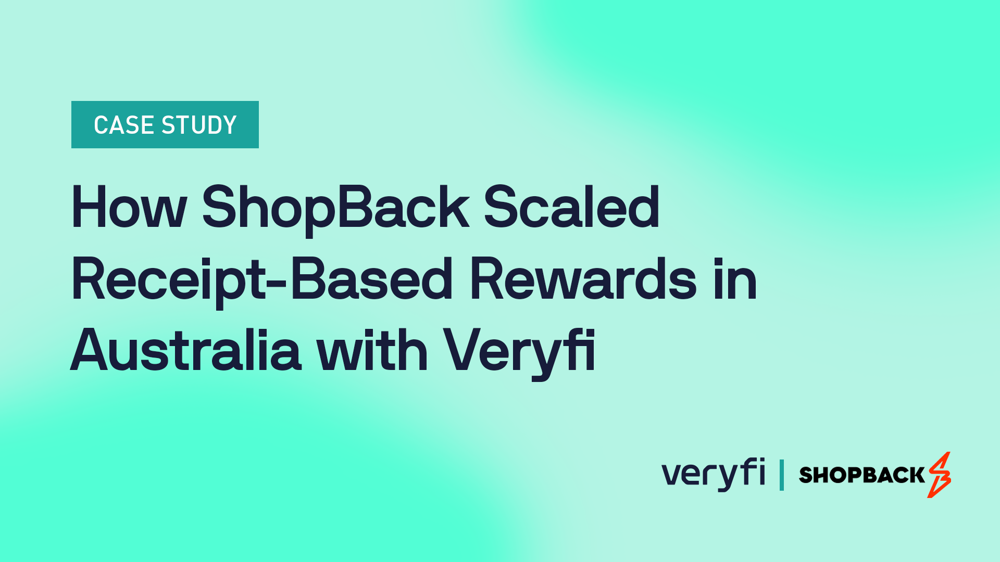

veryfi
the problem
veryfi is a yc-backed fintech startup whose ai turns receipts and documents into structured data for expense management, fraud detection and data extraction. as it scaled, it needed marketing that turned technical ai into stories buyers actually wanted to read.
what i did
i worked as strategist, writer and video producer, and owned each piece from idea to final edit: product demo videos, customer case studies, technical blog posts, social shorts, motion graphics and sales enablement collateral.
results
the demo videos became veryfi's most watched content. case studies gave prospects real-world proof and shortened sales cycles, blog posts brought steady organic traffic in fraud prevention and ocr, and social shorts reached new audiences, with a 3000% increase in engagement in my first month.
selected work
motion graphics
veryfi logo animation: animated brand identity with smooth motion graphics for digital applications.
animated graphics: custom motion design showcasing dynamic visual effects and smooth animations.
(animated) ABM ad: engaging animated ad for linkedin scrollers.
3D scroll animation: interactive 3D visualization showcasing smooth scroll-based animations and depth effects.
product demo videos
blueprint demo: comprehensive walkthrough of veryfi's blueprint, showcasing key features and use cases for enterprise customers.
inboxes demo: detailed exploration of advanced features, demonstrating technical capabilities while maintaining accessibility for business decision makers.
customer case studies

sky airline flight audit automation: documented how sky airline processed 24,000 documents in one month and cleared a year's audit backlog using veryfi adocs + workflow.

pepsico multi channel campaign: highlighted how veryfi's OCR powered pepsico's bottlecaps campaigns in mexico.

lala whatsapp campaign: documented how lala leveraged veryfi's whatsapp integration for promotional campaigns.

shopback receipt rewards: documented how shopback scaled receipt-based rewards in australia with veryfi's real-time fraud detection and instant receipt validation.
technical blog content

ai-powered fraud detection: forward looking piece on upstream fraud prevention using AI.

cpg promotion fraud prevention: in-depth analysis of fraud prevention strategies in CPG promotions.

ocr receipt scanner for cpg: detailed guide on implementing receipt scanning technology for consumer goods.

beyond basic OCR: technical exploration of multimodal data extraction capabilities.